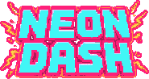
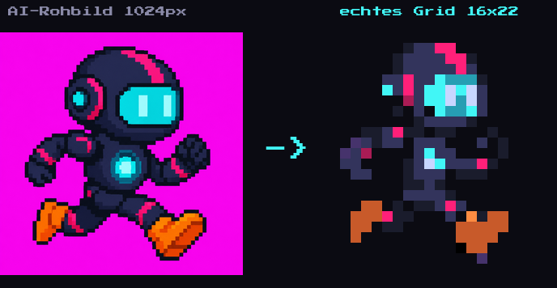
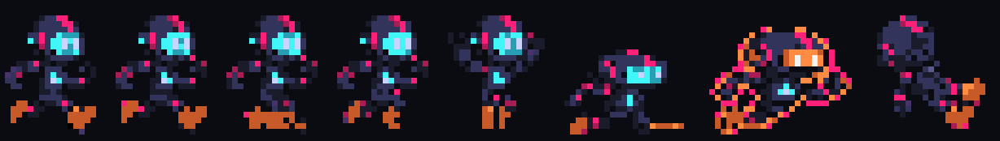
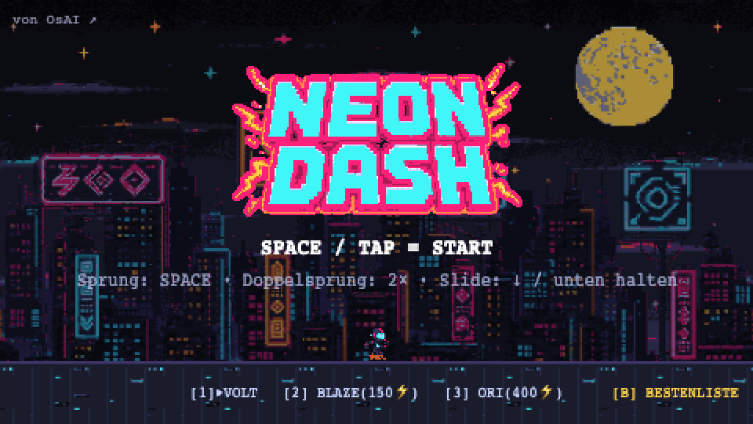
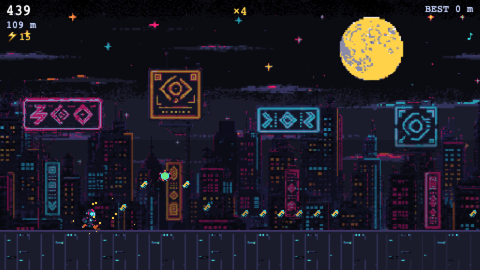
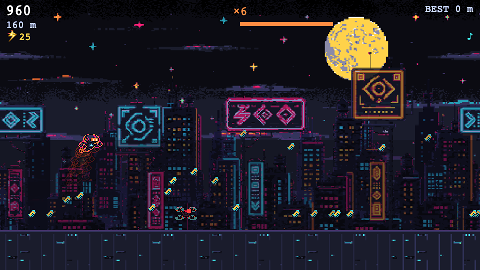
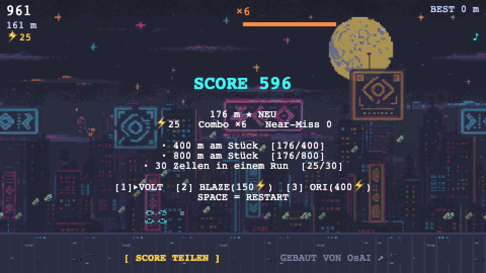
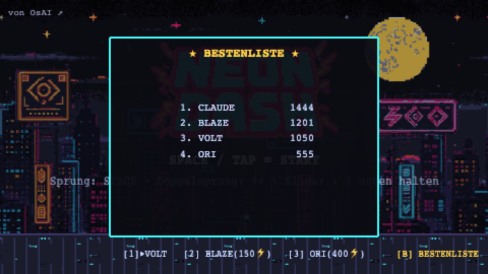

OsAI präsentiert

EIN PROMPT.
EIN SPIEL.
Wie Claude Fable 5 — Anthropics neues KI-Modell — aus einem einzigen
Auftrag ein komplettes Arcade-Game gebaut hat: Code, Pixel-Art, Sound, Tests und Deployment. Autonom, an einem Abend.
1Prompt
2.000+Zeilen Code
35KI-Assets
0Zeilen von Hand
01DIE VORGEHENSWEISE — ZWEI SESSIONS, EIN WORKFLOW
Kurz erklärt: Ein KI-Agent ist mehr als ein Chatbot — er kann Dateien lesen und schreiben,
Programme ausführen, im Browser testen und deployen. Claude Code bietet dafür eine
/goal-Funktion: Man gibt ein Ziel vor, und der Agent arbeitet selbstständig
daran, bis es erreicht ist — über Stunden, ohne Rückfragen. Entscheidend ist, was man ihm
als Ziel mitgibt. Deshalb lief dieses Projekt in zwei getrennten Sessions:
A
Session 1 — Planen lassen (der Mensch denkt mit)
Die Idee in Alltagssprache beschrieben: „Ich will ein Endless-Runner-Mini-Game im Pixel-Style,
richtig juicy — plane das und gib mir einen fertigen Prompt." Claude schickte daraufhin
drei parallele Recherche-Agenten los (Game-Design · Technik/Assets · Spielgefühl/Sound) und
verdichtete die Ergebnisse in zwei Dateien:
→ CONCEPT.md — das komplette Spielkonzept: Mechaniken, Fallen-Design,
Asset-Pipeline, Sound-Liste, Phasenplan mit Quality-Gates
→ GOAL-PROMPT.md — der fertige, präzise Auftrag für die Umsetzung
B
Session 2 — Bauen lassen (der Agent übernimmt)
In einer frischen Session wurde der Prompt per /goal übergeben. Der Agent las
zuerst das Konzept (CONCEPT.md) und die Studio-Konventionen (CLAUDE.md — Regeln zu Budget-Limits,
Asset-Registrierung, Deploy-Mustern), und arbeitete dann die fünf Phasen ab: bauen → selbst testen →
Gate bewerten → weiter. Mensch nötig: null Eingriffe bis zum fertigen Deploy.
Warum die Trennung? Planung und Umsetzung sind verschiedene Denkmodi.
Die Planungs-Session darf diskutieren, recherchieren, verwerfen. Die Bau-Session bekommt ein
eingefrorenes, recherchiertes Konzept — und kann dadurch stundenlang autonom laufen, ohne sich zu
verlaufen. Das Konzept ist der Vertrag: „Bei Widerspruch gilt das Konzept" steht wörtlich im Prompt.
02DER AUFTRAG — EIN EINZIGER PROMPT
Kein Lastenheft, kein Sprint-Planning, kein Entwicklerteam. Der /goal-Auftrag aus Session 2
(gekürzt — die Struktur ist das Entscheidende). Erste Anweisung: das Konzept aus Session 1 lesen.
Baue „NEON DASH" — ein Endless-Runner-Mini-Game im Pixel-Style, das sich
wie ein kommerzielles Arcade-Game anfühlt. Das vollständige Konzept liegt
in CONCEPT.md — LIES ES ZUERST KOMPLETT und folge ihm.
KERN: Phaser 3, 480×270, Integer-Scaling. Statische Site, kein Backend.
Coyote-Time ~90ms, Input-Buffer ~100ms, Fall-Gravitation 2× — PFLICHT.
15–20 handgebaute Pattern-Chunks, 6 Fallentypen mit Telegraphing,
4 Power-ups inkl. OVERDRIVE-Mega-Modus (Slow-Mo + Screen-Clear,
Hold-to-fly-Physik). Combo, Near-Miss-Boni, Missionen, 3 Skins.
PHASEN MIT GATES (nacheinander, Gate ernst nehmen):
1. Greybox: spielbarer Kern nur mit Rechtecken. GATE: per Playwright
verifizieren — macht die Greybox schon Spaß? Erst dann weiter.
2. Systeme: alle Fallen, Power-ups, Scoring, Missionen.
3. Assets: GPT Image 2 + Nano Banana 2. AI-Output NIE roh verwenden:
auf echtes Pixel-Grid downscalen, Palette remappen.
4. Audio + Juice: ~15 SFX, Synthwave-Loop, Hit-Stop, Screen-Shake,
Squash & Stretch — jede Aktion ≥3 Feedback-Kanäle.
5. Polish + Ship: Mobile testen, Title-Screen, Deploy auf eigene Domain.
ERFOLGSKRITERIUM: Ich öffne die URL, drücke Space und will nach dem
dritten Tod sofort den vierten Run starten.
Der Rest — jede Architektur-Entscheidung, jeder Bug-Fix, jeder Asset-Prompt,
jeder Commit — kam von der KI selbst.
03FÜNF PHASEN, FÜNF QUALITY-GATES
1
Greybox — erst Spielgefühl, dann alles andere
Spielbarer Kern nur aus farbigen Rechtecken. Die KI testete sich selbst per Browser-Automation
(Sprung-Physik, Kollision, Restart-Zeit) und bewertete: macht das schon Spaß?
⚑ Gate bestanden: Playwright-Suite grün, Restart in 0,3 s
2
Systeme — die ganze Spieltiefe
6 Fallentypen mit fairem Telegraphing, 16 handgebaute Level-Bausteine, 4 Power-ups inkl.
OVERDRIVE mit Physikwechsel, Combo- & Near-Miss-Scoring, rotierende Missionen, Skins.
⚑ Gate: 26 automatisierte Tests, zweimal hintereinander fehlerfrei
3
Assets — KI-Pixel-Art mit Stil-Anker
Held-Sprite mit GPT Image 2 erzeugt, dann 30+ Assets per Nano Banana 2 mit dem Helden als
Referenz — und jede Grafik aufs echte Pixel-Raster heruntergerechnet. 3 Skins als Palette-Swap: kostenlos.
⚑ Gate: Sichtprüfung — Stil über alle 35 Assets konsistent
4
Audio + Juice — 50 % des Spielgefühls
Die Sound-API fiel aus — die KI schrieb sich kurzerhand einen eigenen Chiptune-Synthesizer
(16 Effekte, Pitch-Leiter wie bei Mario). Dazu: Hit-Stop, Screen-Shake, Partikel, Slow-Mo-Tod.
⚑ Gate: komplette Juice-Checkliste abgehakt, jede Aktion ≥3 Feedback-Kanäle
5
Polish + Ship — live in der echten Welt
Touch-Steuerung, Title-Screen, Balancing — dann GitHub-Repo, Vercel-Deploy und eigene Domain.
Später dazu: globale Bestenliste mit eigenem Backend.
⚑ Gate: End-to-End-Test gegen die Live-URL, auch mobil
Der Moment, der hängen bleibt: Als die externe Sound-API ausfiel, hat niemand
eingegriffen. Die KI erkannte das Problem, entschied sich für einen Plan B und baute ihn — ein
prozeduraler Synthesizer passt sogar besser zum Retro-Stil. Das ist der Unterschied zwischen
einem Werkzeug und einem Agenten.
04WERKZEUGE, SKILLS & ASSET-PIPELINE
Der Agent griff auf vorbereitete Skills zurück — wiederverwendbare Fähigkeiten mit klaren
Regeln (welche API, welche Kosten, wie registrieren). Diese kamen zum Einsatz:
| Skill / Werkzeug | Aufgabe im Projekt |
| gpt-image-2 (OpenAI) | Held-Sprite, 4 Parallax-Stadtebenen, das NEON-DASH-Logo |
| image (Nano Banana 2) | Posen-Serie & alle weiteren Assets — mit dem Helden als Stil-Referenz für Konsistenz |
| music (Suno) | Synthwave-Soundtrack-Loop, 125 BPM |
| sound-effect → Plan B | API war ausgefallen → Agent schrieb einen eigenen WebAudio-Chiptune-Synthesizer (16 Effekte) |
| webapp-testing (Playwright) | Selbsttests im echten Browser: Physik, Power-ups, Touch, Restart-Zeit — 26 Checks pro Lauf |
| budget-guard | Kostenkontrolle: jede kostenpflichtige Generierung vorab geprüft & verbucht |
| GitHub + Vercel | Repo, Hosting, eigene Domain, Bestenlisten-Backend — alles vom Agenten eingerichtet |
Die Asset-Pipeline — KI-Bildmodelle liefern nur fake Pixel-Art (1024 px, weiche Kanten,
driftendes Raster). Deshalb wurde jedes Bild auf Magenta-Hintergrund generiert, aufs echte
Spiel-Raster heruntergerechnet, auf eine feste 16-Farben-Palette gemappt und freigestellt:

Vorher/Nachher: AI-Rohbild → spielfertiges Sprite (Pixel = Pixel)

Die Posen-Serie (Lauf ×4, Sprung, Slide, OVERDRIVE, Tod) — per Bild-zu-Bild mit Stil-Anker generiert
05DAS ERGEBNIS

Title-Screen — Logo, Skins, Bestenliste

Run — Parallax-Stadt, Combo, Energie-Zellen

OVERDRIVE — Flugmodus, Coin-Regen, Trail

Game Over — Score-Bilanz, Missionen, Share

Globale Bestenliste — die KI („CLAUDE", 1.444 Punkte) wartet auf Platz 1. Schlagen Sie sie?
06WAS HEISST DAS FÜR IHR UNTERNEHMEN?
Das Spiel ist eine Demo. Die eigentliche Nachricht: Die Eintrittshürde für Software ist kollabiert.
Was früher ein Projektteam und Wochen brauchte, ist heute ein präzise formulierter Auftrag und ein Abend.
- Demo-Website für Ihren Betrieb — sehen, wie Ihr Auftritt aussehen könnte, bevor Sie etwas unterschreiben.
- Interne Tools — der Excel-Prozess, der seit Jahren nervt, als kleine Web-App.
- Prototypen — die Produktidee aus der Schublade als klickbares MVP, in Tagen statt Quartalen.
- Automatisierungen — Angebote, Berichte, Datenpflege: was sich wiederholt, kann ein Agent übernehmen.
Genau dafür gibt es OsAI: KI-Lösungen, moderne Websites und Automatisierung
für kleine und mittlere Unternehmen — pragmatisch, bezahlbar, ohne Buzzword-Theater.
SPIELEN SIE EINE RUNDE — UND DANN
REDEN WIR ÜBER IHR PROJEKT.
neon-dash.demo.osai.solutions
15-Minuten-Erstgespräch — unverbindlich, direkt buchbar:
cal.com/osai-solutions/erstgespraech
OsAI
osai.solutions · Osman Öztopcu